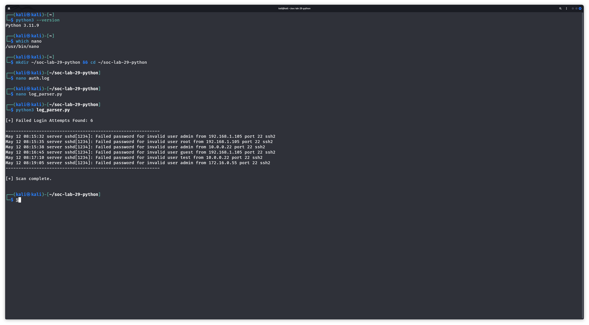
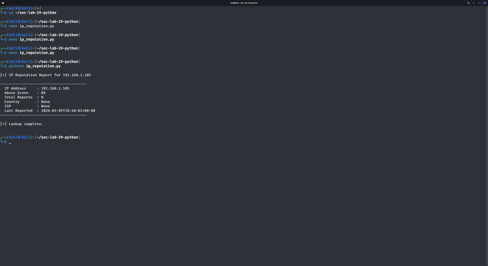
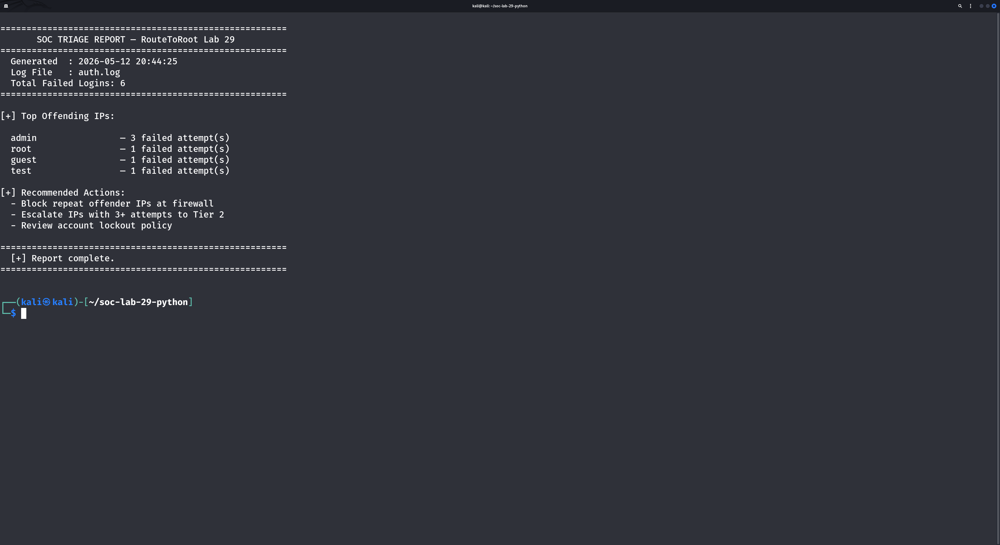

Three SOC automation scripts built in Python 3 — log parsing, IP reputation lookup, and triage report generation
| Field | Detail |
|---|---|
| Platform | Kali Linux (VMware Workstation) |
| Language | Python 3.11.9 |
| Editor | GNU nano 8.1 |
| Log File | auth.log (simulated SSH authentication log) |
| External API | AbuseIPDB v2 — IP reputation lookup |
| Scripts | log_parser.py, ip_reputation.py, alert_summary.py |
| Working Directory | ~/soc-lab-29-python |
log_parser.py reads a simulated SSH authentication log and extracts all failed login attempts, displaying each event with full timestamp, account name, and source IP.
Key output:
ip_reputation.py queries the AbuseIPDB REST API to retrieve threat intelligence on a suspicious IP address identified during log analysis.
API response fields returned:
alert_summary.py combines log parsing and IP analysis into a formatted SOC triage report, automatically ranking offending accounts by attempt count and generating recommended containment actions.
Report output included:
| Account | Failed Attempts | Source IPs | Action |
|---|---|---|---|
| admin | 3 | 192.168.1.105, 10.0.0.22 | ESCALATE |
| root | 1 | 192.168.1.105 | MONITOR |
| guest | 1 | 192.168.1.105 | MONITOR |
| test | 1 | 10.0.0.22 | MONITOR |
| Field | Value |
|---|---|
| Tactic | Credential Access (TA0006) |
| Technique | Brute Force (T1110) |
| Sub-technique | Password Guessing (T1110.001) |
| Objective | Gain unauthorized SSH access via repeated credential attempts |


